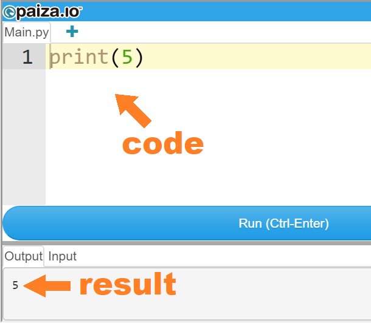
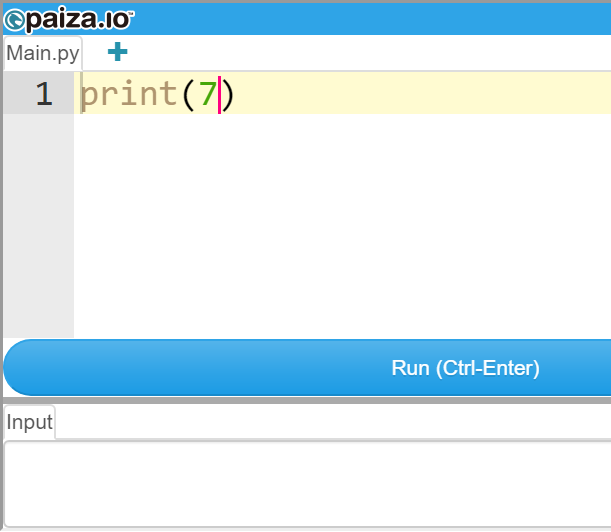
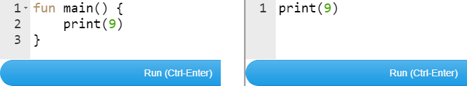
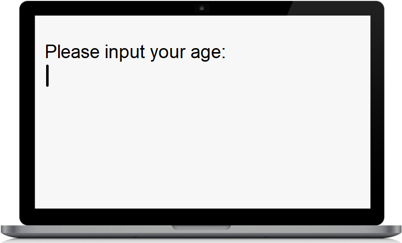
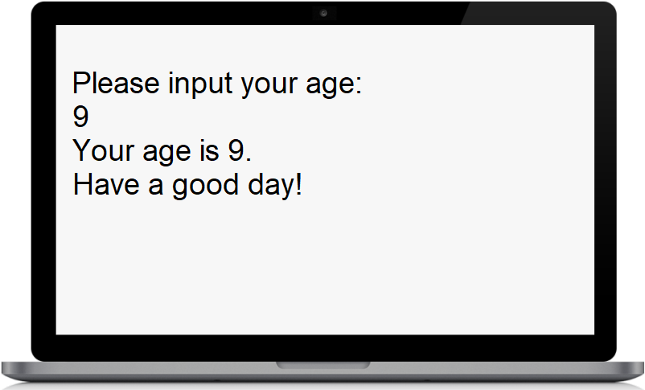

The best entry point for anyone who wants to start learning programming. 
Such texts are called programs (or codes) and like any other texts are written in languages. The languages the programs are written in are named programming languages. We here will learn how to write the programs in such amazing programming languages as Kotlin and Swift. Plus, these two languages cover nearly everything we might do in programming. For example, with Kotlin we may effectively write programs for all Android devices: So really, it would be unbelievably awesome to know both of these languages. Fortunately, the languages are almost the same. And it would be just great to exploit their likeness while learning. I predict that from now on we will see more and more people eager to learn both these amazing languages, and of course also, to learn them simultaneously.
So within just minutes you will be able to write the program to play this funny game. We can comfortably write, edit and run codes into special environments called codeEditors: So suppose we have the following code:
Please, don’t worry about the code so far. Also, don’t worry about why there is the fun main() part in Kotlin's code and there is not the same part in Swift's code. Don’t worry about these things so far. Let's run this code in the codeEditor below — right here on this page: In order to run the code, in the codeEditor above, we have to click the Run button there: and we will see this: For now, all you need to understand is that in the codeEditor above there is the code containing the number 5 and there is the result of running the code:  As we can see the result is also 5, the same number that is in the code. Another thing you will need to understand is that in the code we can change that number 5 to another number 7, for example, and the result will change — will be also 7: You yourself also can change the code. So, for example, you might change that number 7 to another number 9. To do it, in the codeEditor above, please put your cursor inside the code like this:  next change that number 7 to 9 like this:  and then, in order to run the code, click the Run button: After doing so, you should see that the result has become also 9: So that when we change the number in the code the result also changes:
The 9 here, as you understand, is the result of running the above code. Great! Also, in the code we can change that number 9 to the word Hello, for example, and the result will also change — will be Hello: Please pay attention, now in the code there are the quotes " ":
since Hello is a string of letters. It is important in programming. Also, if we want, we can change the string Hello to the string Hi world!, for example:
So, by changing our code, we can easily get different results: the number 9 or the string Hello, for example. Only what we want. It is absolutely great. Any code is created only to get the result we want while running code. If we want the machine (computer) may give as the result some text. But, if wanted, the machine (robot) may give as the result some physical actions like moving its legs and hands, for example: By coding, we can make the machine (computer, robot) do everything we want. The imagination is the limit. 
Also, it is worth to note that any code is just a plain text. So you can write your code on a piece of paper or in any text editor you know (e.g. Notepad or Brackets), and just later you might put this code into a codeEditor for running. It is so since any code, as said above, is just a plain text:
But how, exactly, should codes be arranged inside? What is THE principle there? Right now, we will get that. In programming, we command the machine only by Commanders: 
So it is namely the Commanders that make the machine do the works that we want. They are our helpers. Interestingly, Commanders (our helpers) exist only in the mind of the machine: By the way, everything that exists only in the mind of the machine is called virtual. So these Commanders, of course, are virtual. We cannot feel them by our hands. But they really exist and can make the machine do the works we want. Thankfully, we can explicitly interact with such virtual commanders. Each Commander has a unique name:
and there is a lot of Commanders with different names. Importantly, each Commander can make the machine do some specific work. Just like on the street, when we need specific persons we might call (invoke) them by their names: in programming, when we need specific Commanders to make the machine do specific works we also can call (invoke) them by their names. Of course, in programming, we can call (invoke) Commanders only by writing their names in code: Let's look again at our familiar code:
And we in the code, by writing the Commander’s name print, call (invoke) this Commander to make the machine do some specific work. So, specifically, the Commander named print makes the machine do the following work: — print makes the machine take our number 5 being inside the brackets ( ) and print (display) this number as a result (5) on the screen:
So the full name of this Commander is print(). Now let's again run this code:
Please click the Try It Yourself button above. And after the codeEditor automatically opens in a new window, please click the Run button there: in order to run the code. Is everything okay with it? I hope so. Next, I will mostly direct you to other websites for running code so that this one-page, interactive book would be light and never be too heavy. Only if you want, on that awesome online codeEditor website you might set your Bright theme instead of the default Dark one, or increase the font size, for example: Here you might ask me: But where do such Commanders, like print(), come from in the mind of the computer — who created them? The short answer is that other coders (programmers) created such Commanders by writing basic codes. Those other coders created such Commanders for themselves and everyone else. Very soon, you will be able to create your own Commanders. Yet you might also ask me one more question: How do we know that, for example, the Commander print() makes the machine do that specific work and no other? The answer is that there is the list of such Commanders with a full description of what each Commander makes the machine do. We will take a look at this list a little bit later. Back to code. In code, we can call (invoke) a Commander as many times as we want:
As we can see the results (in Kotlin and Swift) are different. In Kotlin, there is yet other Commander with the name println() that prints (displays) the result like Swift’s print() does:
Please always click the Try It Yourself button to make sure that the code is correct and works well. Also click this Try It Yourself button to play around with the code! Being in the codeEditor, you can change something in your code and get a new result while running. Playing with code is both interesting and extremely useful for becoming a cool coder. 😎🔥 There are sorts of Commanders, depending on the sorts of works the Commanders make the machine do. In math, as we know, these Arithmetic Commanders are called Arithmetic Signs and work this way:
In programming, these Arithmetic Commanders also work the same way:
As we can see Arithmetic Commanders make the machine do arithmetic operations on numbers. If needed, we call (invoke) Arithmetic Commanders and they make the machine do arithmetic operations on numbers. Great! In order to do so, just imagine a situation in which you would not have any description (explanation) to code and should learn everything only from the code itself, analyzing the code and the result. Learning programming this way, step by step, is called learning from code. This approach may be very effective. So try learning from code as much as possible. Now take a look at this familiar code again:
Could you understand how do Arithmetic Commanders (+ - * /) work only from that code itself? In other words, сould you do learning from code in that case? I hope you could. I think that absolutely you could. So try learning from code as much as possible. We might feel these objects by our hands and might control them. So, for example, we might put one of such objects on a shelf. Later, we might take the object from the shelf. Yet we also might give the object to another person, for example. Great. In programming, the number 5 or the word Hello, for example, also are objects. Though, they are virtual objects that exist only in the mind of the machine. Of course, we cannot feel such objects by our hands but these objects really exist and we can also control them. So, for example, in the familiar code below:
and the Commander print() takes the object 5 and prints (displays) this object as the result 5 on the screen:
Nice. Plus, in programming, we can control even more complicated virtual objects. So, for example, in the also familiar code below:
we give each single calculation (for example, 4 - 3) to the Commander print() also as an object: Great. Just like you might control your sweet candy: · might put the candy in the pocket · might be storing the candy inside the pocket · might take the candy from the pocket in programming, while running code, we can also control virtual objects like, for example, 5 or Hello in the same way. So, for example, in the same way we might control the virtual object 5: · might put the object 5 in the pocket · might be storing the object 5 inside the pocket · might take the object 5 from the pocket Also, in the same way we might control the virtual object Hello, for example: Of course, such pockets, in programming, also are virtual and exist only in the mind of the machine. Of course, we cannot feel them by our hands. But they really exist and can store virtual objects. For example, to control the virtual object 5 in the way described above, we first must create a special Commander — Pocket Commander — which, in turn, makes the machine create the virtual pocket for storing that virtual object 5. Very soon we will see how to easily create Pocket Commanders. By the way, Pocket Commanders are called this way not because they are miniature or capable of being carried in one's pocket, but only because they make the machine create virtual pockets for storing virtual objects. Interestingly, when creating any Commanders (of course, incl. Pocket Commanders) we must give them names just like parents give names to their kids when the kids are born. There are 2 sorts of Pocket Commanders that we might create: · Invariable-Pocket Commanders · Variable-Pocket Commanders. So, for example, to create our own Invariable-Pocket Commander named Sam we first must write val and let, respectively, before the Commander’s name:
Next, to put the object 5 in control of the Invariable-Pocket-Commander Sam we must further write the equal sign = and then 5:
Don't let the equal sign = confuse you. This single line of code:
only means that the Invariable-Pocket Commander Sam takes the object 5 in its own control. If in more detail, this line of code:
means that the Invariable-Pocket Commander Sam makes the machine do the 3 things: · create the invariable pocket Sam · put the object 5 in the invariable pocket Sam · start storing the object 5 inside the invariable pocket Sam Please distinguish between the Invariable-Pocket Commander Sam and the invariable pocket Sam: One name, but different entities! The Invariable-Pocket Commander Sam makes the machine create the invariable pocket Sam. Keep it in mind. For example, our whole code might look like this:
Magic! Try it yourself! As we can see from the code, we call (invoke) the Invariable-Pocket Commander Sam as the object for the Commander print():
In this case, the Pocket Commander Sam makes the machine give the Commander print() the object 5 being stored in the invariable pocket Sam. It might be said that we featly associate the name Sam with the virtual object 5. Another example of code:
Please pay attention, in the code above there is the Commander named Quotes: " ". The Quotes Commander makes the machine treat everything that is inside them as a text. Yet another example of code:
The code above shows that we can call (invoke) the Invariable-Pocket Commander Sam as many times as we want. Yet, plus another example of code:
Great. Fantastic. So, for example, to create our own Variable-Pocket Commander named Sam we first must write var before the Commander’s name:
Next, to put the object 5 in control of the Variable-Pocket Commander Sam we must further write the equal sign = and then 5:
Don't let the equal sign = confuse you again. This single line of code:
only means that the Variable-Pocket Commander Sam takes the object 5 in its own control. Again, if in more detail, this line of code:
means that the Variable-Pocket Commander Sam makes the machine do the 3 things: · create the variable pocket Sam · put the object 5 in the variable pocket Sam · start storing the object 5 inside the variable pocket Sam Once again: please distinguish between the Variable-Pocket Commander Sam and the variable pocket Sam: One name again, but different entities! The Variable-Pocket Commander Sam makes the machine create the variable pocket Sam. Keep it in mind too. For example, our whole code might look like this:
It might also be said that we featly associate the name Sam with the virtual object 5. As we can see from that code above, Variable-Pocket Commanders can work the same way like Invariable-Pocket Commanders do. Good. But additionally, Variable-Pocket Commanders can do this:
Awesome. As we can see from the code above, we can change the object being controlled by the Variable-Pocket Commander Sam. So, first the object was 5, then the object became 7. Another example of code:
Easy. But, please pay attention to the fact that we cannot do the same things with Invariable-Pocket Commanders:
The error appears in the result since when we create an Invariable-Pocket Commander we cannot change the object being controlled by this Commander. Here you might ask me: Why ever should we create Invariable-Pocket Commanders, since Variable-Pocket Commanders can do everything they can and even more? The answer is that there is one notable fact about the programming process: programmers (coders) spend a lot of time reading code 
that was written by others. So really while programming, you will be spending a lot of your time reading someone else's code, and if there is a lot of Variable-Pocket Commanders it might be fairly hard for you to understand how exactly the code works, since you need to check each Variable-Pocket Commander at each point of the program for changes to its object. So from this perspective, the most experienced programmers strongly recommend creating Invariable-Pocket Commanders (val and let, respectively) when it is just possible. So we will always do just so. And remember: good code is like a good joke: it needs no explanation.
As we can see, in the code above there is the Quotes Commander " " and inside the quotes there is the Pocket Commander Age. In other words, we can call (invoke) the Pocket Commander inside the quotes. In other words, inside the String. Please pay attention, we can do it only thanks to such Commanders as $ and \( ), respectively. Without them we would get this ridiculous result:
But fortunately, thanks to these adorable Commanders $ and \( ) we can make that magic. Great. 
Imagine your program interacts with another person: the program asks the person to input (type) something by the keyboard and depending on what the person inputs (types) the result of running the program varies. Imagined it? Great. Right now, let's write a program that would work in that so-called interactive mode: would ask for the age of a person; and after the person inputs (types) it (for example, 9) the program would print (display) the following text:
  Of course, if the person inputs (types) 12, for example, the program would print (display) the following text:
So, first of all, the program must print (display) the message Please input your age: on the screen. For this reason, the beginning of code has to look like this:
Great. So while running the above code the user (person) will see this massage on the screen: Next the user should have the option to input (type) his/her age, for example, 9: and press the Enter button on the keyboard for entering this info into the mind of the computer. And if the user (person) does so, the screen must look this way: Given all this, our whole code might look like this:
We will sort out everything in this code a little bit later. For now, let's run this code right away! And, we will do it in the new codeEditor below. First let's run the Kotlin code: Earlier in Kotlin, a while ago, the fun main() part of code should have looked this way:
But now, as we know, it looks this way:
The team behind that above codeEditor has not upgraded their editor yet. For us it is not any problem since in both the cases, the codes work the same way. Just ignore that. So, in order to run our code in the new codeEditor being also below, first of all, please turn on the Interactive Mode button there like this: The Execute button is just another name of the Run button. So pressing the Execute button we run code. After we run our code we will see this: Then we, playing the role of the user, have to input (type) a number. For example, let's input (type) the number 9 and then press the Enter button on the keyboard: and we will see this in the result: Have you seen that result? I hope you have. So you have just run your first program in the interactive mode: your first interactive program. Congratulations! Now you know how a program may interact with a user in the interactive mode. Great. That awesome codeEditor above works absolutely perfectly for Kotlin interactive programs, but it doesn't do the same for Swift interactive programs. For the sake of uniformity, let's use one codeEdtor for both the languages even though there not everything will work perfectly in the interactive mode. Okay? Good. So let's run the same code in the pretty familiar codeEdotor below: But first, since this codeEditor above doesn't work perfectly with interactive programs, we have to put our cursor inside the below field and input the number 9 like this: Next, in order to run the code, we have to click the Run button: and we will see this: Great. For now, the 1st thing that is important to note is that this pretty familiar codeEditor above doesn't work perfectly in the interactive mode; in other words, with interactive programs. So for this reason, we did input the number 9 before running the code. Only for this reason! The 2nd thing is that the results are slightly different:
However, each result shows that the program has taken the user's input 9 — the interaction between the user and the program happened! It is absolutely great. And also there, the Swift program has added extra information to the user's input 9:
This is just a feature of the Swift language. We will dive in it later. For now, just ignore it. And now, let's sort out everything in the program below:
Consider how exactly the program works. First of all, the machine comes to the 1st string of the code. There, as we already know, we make the machine print (display) the message Please input your age: on the screen:
Next, the machine comes to the 2nd string of the code and sees there readLine() — the Commander readLine():
The Commander readLine() makes the machine pause everything and become waiting for the user's input. After the user inputs (types) the number 9 and presses the Enter button on the keyboard:
the machine takes the user's input and puts it into the invariable pocket userInput. Please pay attention that the Invariable-Pocket Commander userInput makes the machine create the invariable pocket userInput:
Next, the machine comes to the 3rd string of the code. There we make the machine print (display) the text inside the quotes " ", previously calling (invoking) the Invariable-Pocket Commander userInput:
Please pay attention that there are the Commanders $ and \( ), respectively. These adorable Commanders, as we know, make calling (invoking) the Pocket Commander userInput inside the quotes possible. Next, the machine comes to the 4th string of the code and prints the text Have a good day!:
This is it. So our whole example looks the following:
Once again, please click this Try It Yourself button to play around with the code! Being in the codeEditor, you might change something in your code and get a new result while running. Playing with code is both interesting and extremely useful for becoming a cool coder. 😎🔥 A program working with the user's input is a lot more interesting since it is interactive and, in a way, more alive. Another example of code:
So if closer to our 1-st goal where we, as an user, should choice between whether rock or paper or scissors, a part of our goal program might look like this:
Let's name this part of our goal program the Part #1. Okay. We go on. But additionally, we can also make the machine create Arrays of Pockets and be storing virtual objects there. An example of an Array of Pockets storing objects: Another example of an Array of Pockets storing objects: In order to create such Arrays we fist have to create Array Pocket Commanders. Take a look at this code: So, for example, to create our own Array Pocket Commander named Sam we first must write val and let, respectively, before the Commander’s name: In order to create of Pockets we have to create Array Commander with Bitcoin: 
Get Invoice It is the book 1. The book 2 pro is here. Programming is a wonderful attraction: 
KotlinAndSwift.github.io Author's Telegram Account: KotlinAndSwift Twitter: KotlinAndSwift |